Kitty the Hat Makin’ Cat, is an interactive simulation game that I coded in
Java using Eclipse as an IDE, it follows a cat named Kitty through her day in the neighborhood.
As the final project for a multimedia programming course, the aim of this application was to create
an interactive simulation which would lead a user through some process to produce an end result.
I decided on an activity that involved a playful plot to propel the game.
Storyline
The story begins outside Kitty’s house where there is an option to customize her avatar, she walks through the neighborhood and meets her fellow hat-loving friend, Darcy. This initiates dialogue between the two cats where Darcy asks Kitty to help her collect some items to create a new sunhat for her collection. Kitty continues her wak and collects items for Darcy along the way. By the end of the process she has gathered enough items to decorate Darcy’s hat with, the user can choose two items which generate the final product according to what has been selected.
Assets
Illustrations and Design
For the background and environment, I wanted an area which reflected nature and a lot of greenery I referenced an asset pack from an artist named Pixfinity on itchio. I outlined these assets and modified the colors to match the visual aesthetic of my application.

While creating the animation frames for Kitty’s walking motion, I followed the structure of an existing sprite sheet by Rachel Nabors, tracing overtop using the vector tool in Figma, to create a clean and functional silhouette for my characters.
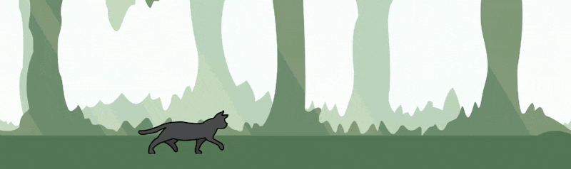The facial expressions on both the opening screen and during dialogue with Darcy were drawn by hand while referencing these three specific photos to portray expressive visuals.
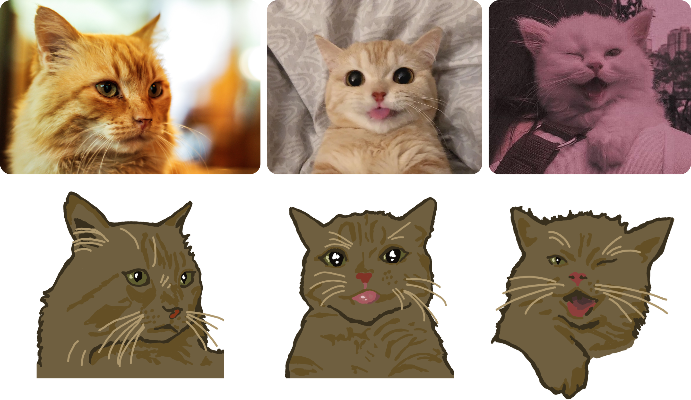 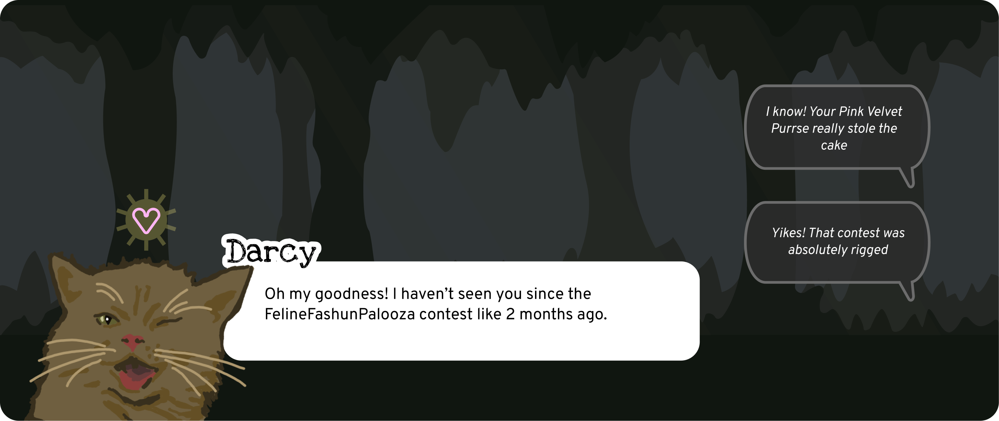 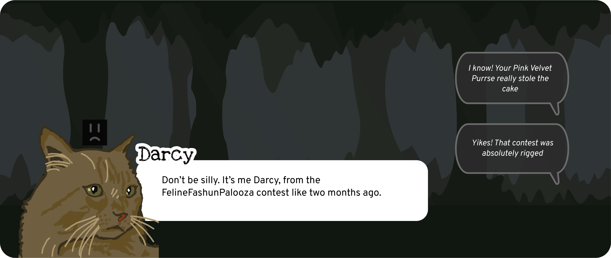I created the items, buttons, and all other drawn assets using Figma’s vector and shape tools.
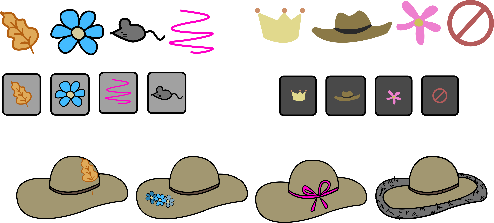Layout and design of all screens were also done in Figma, making the process of translating my vision into code much easier and cleaner. All layout iterations and functionality of different screens were first mapped out, then exported, and lastly incorporated into the application based on these wireframes.
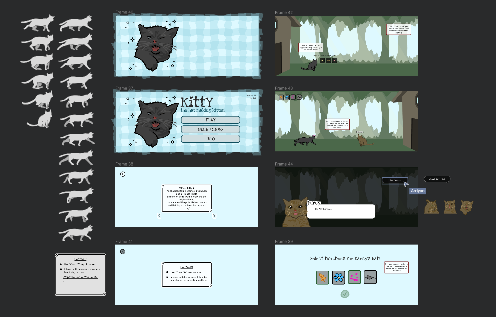
Code
Libraries and Language
This application was coded in Java using the
Eclipse integrated development environment (IDE),
along with the help of both Minim and Processing Java libraries.
I outlined my initial plan for the project in a
game design document
that was drafted before I began coding.
PVector is the main class utilized from the Processing library within my
project, as it is efficient in storing the x and y values
of variables together such as for velocity or position.
Another helpful library used is Minim which is a Java sound library that
aids in making the process of playing, looping, or pausing audio very seamless.
Code Snippets
For Kitty's avatar, I sliced the sprite sheet containing her walking animation within the code through creating an additional SpriteSheet class containing the methods to do so. An issue I faced as was integrating the option to customize Kitty’s avatar during the animation. I wanted to include the option for her to wear different fun hats as a playful feature, although layering the hats over each frame was a challenging task. To resolve this, I used a decorator pattern to add accessories over the base sprite sheet used for Kitty’s walk. This structural pattern allowed me to add each hat on top of Kitty’s base avatar through extending from the KittyDecorator class and overriding its drawKitty() method to include the separate hats.
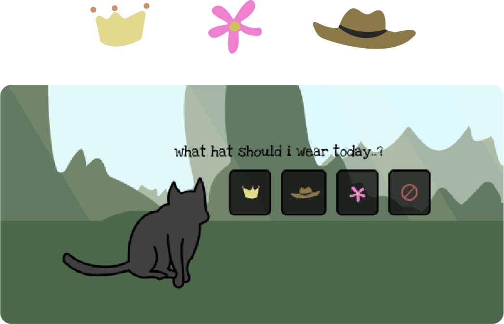 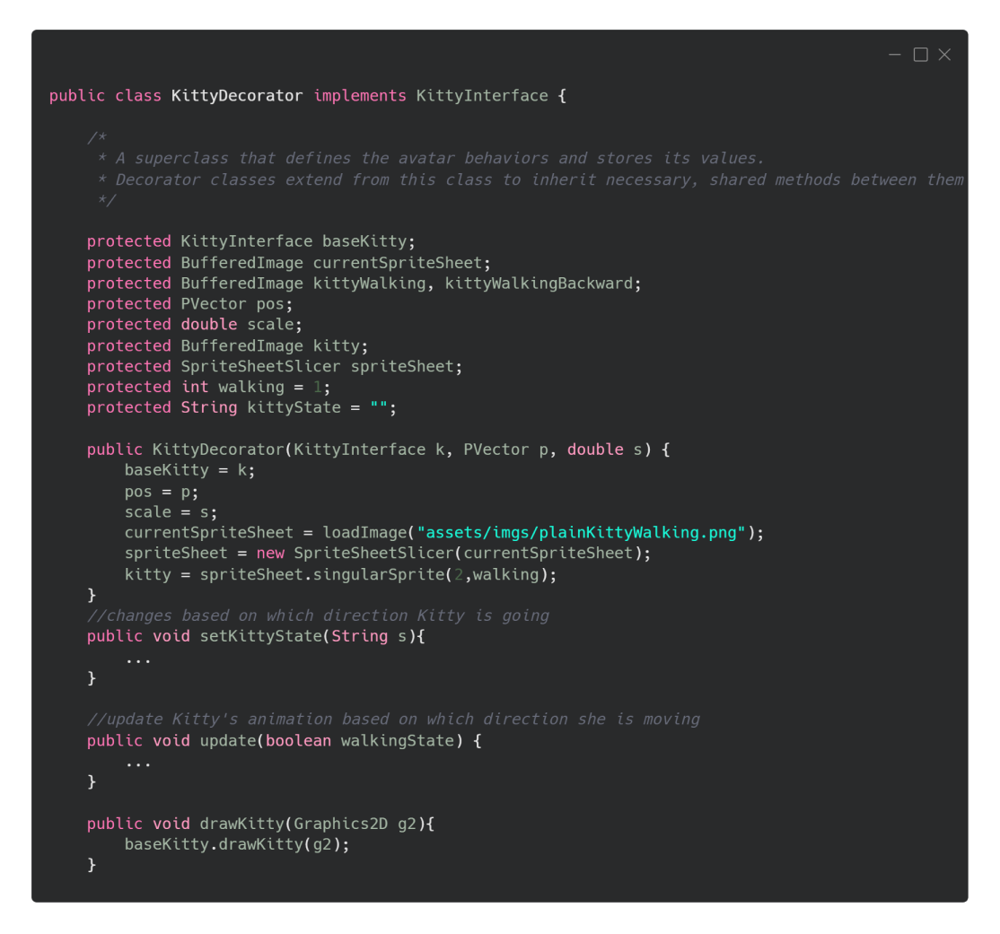For the background I felt that a parallax effect would fit the atmosphere I wanted for the game and create a unique environment. I did this through making a class that controlled the direction of movement displayed by the background layers. These layers would move depending on whether the user clicked the right or left key on their keyboard.
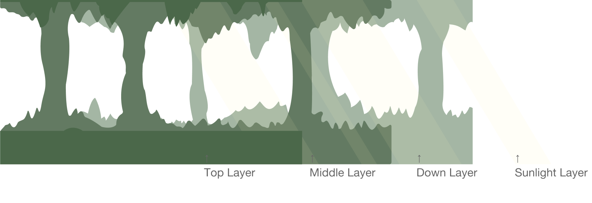 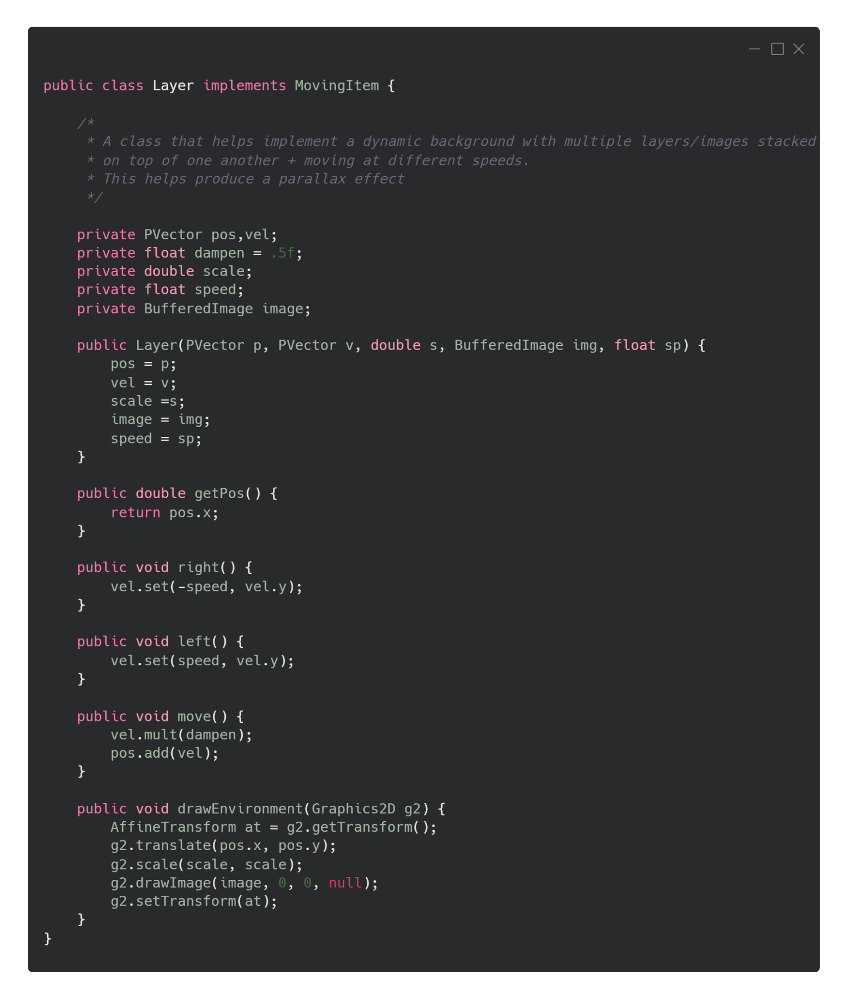In order to transition between different screens depending on user interaction and button clicks, I utilized a Finite State Machine (FSM) model. I declared each screen as its own string and used a state variable which changed depending on a conditional which checked the button that would be clicked on a specific screen. This would trigger specific audio or visuals to play.
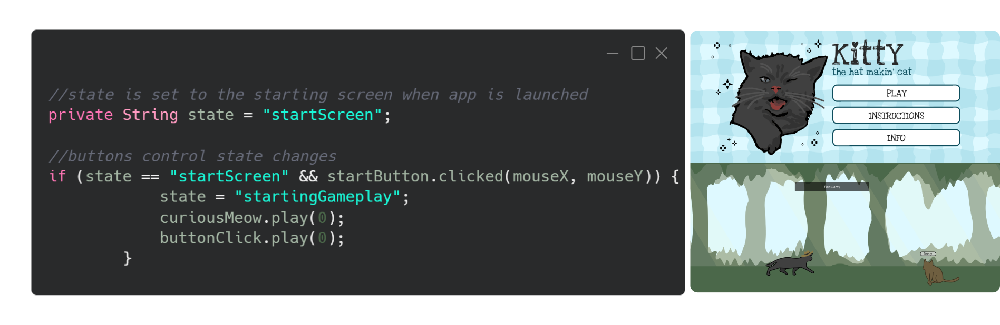For the collection portion of my game I stored each visible item in a HashMap, that would disappear when clicked on and display the corresponding storage box in the top left corner once collected. Once the user has collected at least two items, they are able click on Darcy to move onto the hat creation page which will display the collected materials. From there, the user can choose two items to decorate a hat with. The selection is stored within an ArrayList that is accessed in the final hat reveal screen, which displays a unique hat based on the users choice.
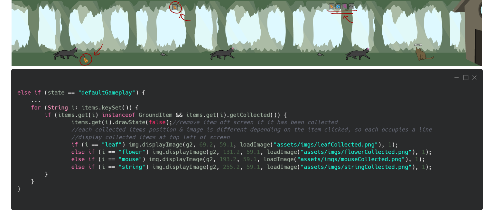 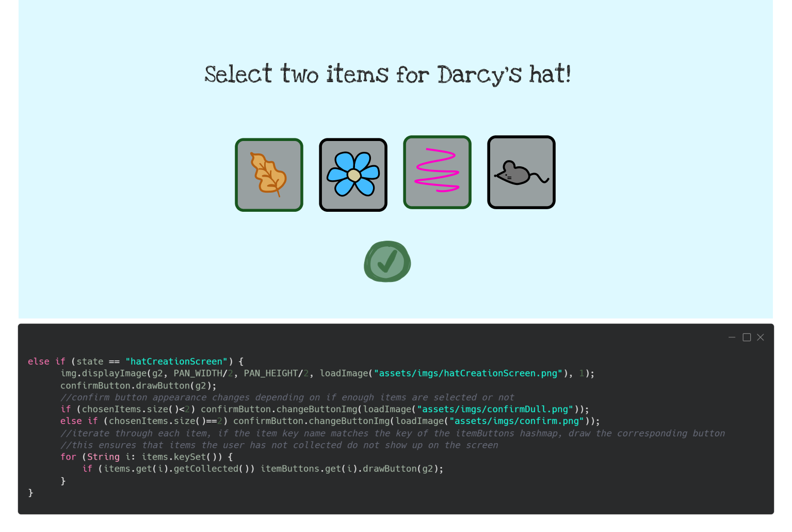 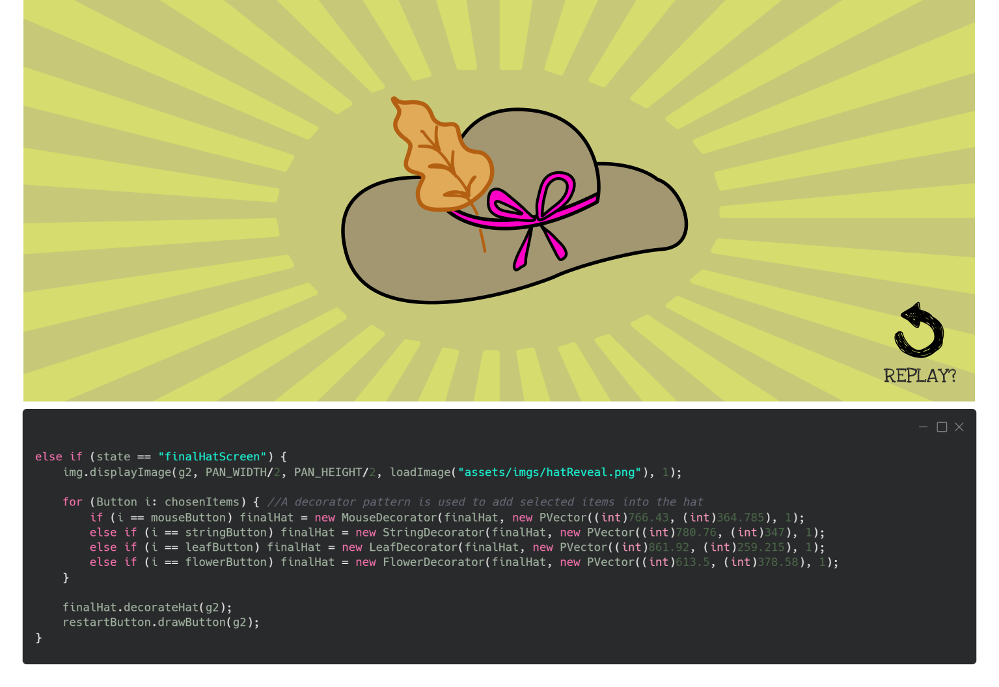Final Game
Reflection
The open ended nature of this project allowed me to explore different methods of character movement, design, and in-game interactions outside of the material covered within the course. I enjoyed the creative freedom this granted me and the experience I gained learning how to implement various features such as sprite animation, parallax movement, and creating a unique end result. Some future modifications I'd like to make are more avatar customization options, additional interaction during dialogue sequences, and added challenges in finding items.